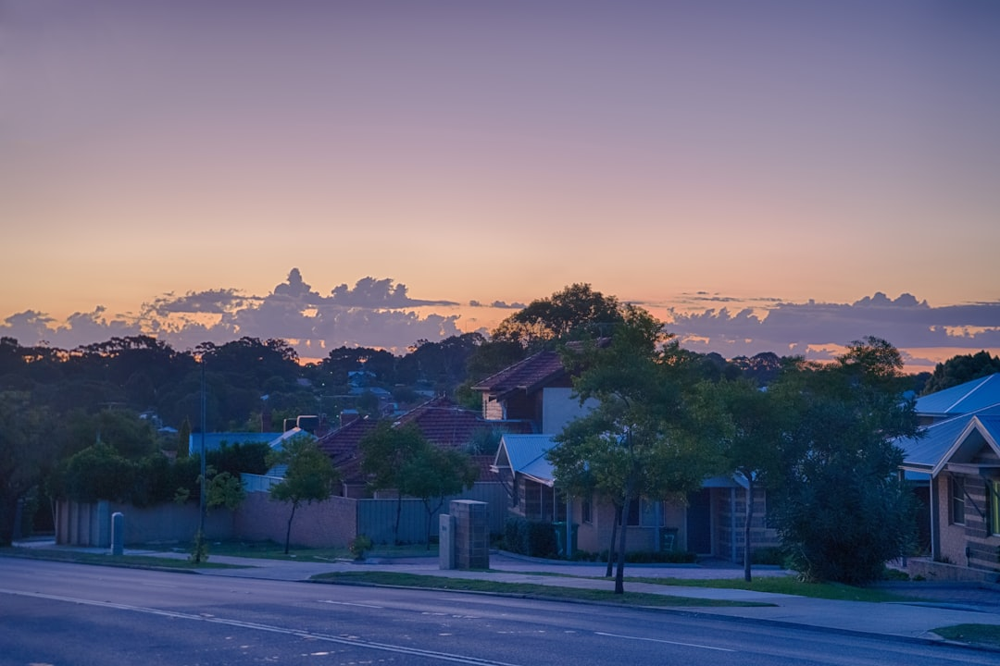

Perth borrowers get the most value when the broker panel matches the loan problem. A first home buyer may need FHBG and a 5% deposit path. A refinancer needs rate and cashback comparison after fees. An investor may need interest only or equity access. A construction borrower needs progress payment lending. A commercial applicant may need specialist lenders when a main bank declines on business age. The service is free because brokers are paid by the lender on settlement.
Choosing a broker in Perth is really about scenario fit, because the best lender panel for a first home buyer is not the same one you would use to refinance, invest, build or fund a business.
See Finance Broker Perth for the current service details.
Home Loan Brokers Perth Explained
Finance Broker Perth gives you a panel view rather than one bank's policy. That matters when the file is a first home buyer checking FHBG, a homeowner comparing refinance cashback, an investor weighing interest only structure, or a business owner whose main bank declined on age alone.
Keep the focus on the loan problem, not the suburb. Whether the deal is in the northern suburbs, an established western suburbs purchase, or a city fringe build, the right shortlist is the one that matches deposit, income and timing. A lender that only suits one borrower type is the wrong panel for everyone else. It is also the difference between a quick yes, a slow maybe and a file that needs to be rebuilt before it can move.
First home buyer: deposit size and scheme path
For first home buyers, the first filter is deposit size and whether the lender can work with a scheme. A specialist broker can check FHBG eligibility and may help structure a purchase with a 5% deposit and no LMI, which changes the upfront cost before pre-approval is even sought.
Bring the basics before you ask for a shortlist: your deposit amount, any scheme paperwork, and a rough timing window for the purchase. That keeps the conversation tied to what you can actually settle on rather than a generic rate pitch. It also tells the broker whether the file is ready now or whether you still need to wait and save a little longer.
- Ask which lenders accept a 5% deposit under FHBG.
- Ask what documents the lender wants before pre-approval.
- Ask how your search window lines up with the approval window.
Refinance, investor and commercial panels
Refinancers need a different panel again. A refinance specialist compares 100+ lenders and may find better rates, sometimes with cashback offers, so the real test is whether the new loan beats your current one after fees and any break costs. Bring your latest statement so the broker can price the file quickly and spot whether you are chasing a genuine saving or just a headline rate.
Investors usually care more about structure than headline rate. Interest only settings, equity access and portfolio lending matter when cash flow and borrowing capacity drive the strategy. Bring recent statements and a clear hold plan so the shortlist matches the file, not just the postcode.
Commercial finance is different again. A newer Perth business can be declined by a main bank on age alone even when trading is sound. A commercial broker can access specialist lenders who look at trading performance instead of a blanket cutoff, which keeps the conversation on business strength.
Construction loans need a different drawdown path
Construction finance is not just another home loan. New builds and knockdown rebuilds need progress payment lending, so the lender has to release funds in stages rather than as a single lump sum.
For the build case on its own, the sibling guide on construction loans in Perth goes deeper. If the property plan involves a build, the panel needs to match the build schedule, not the other way around.
How to brief the broker
Start with the loan type, then the property details. The process is three steps: tell your needs, get matched, then compare options from the panel. That order keeps unsuitable lenders out of the shortlist before you spend time on the wrong property. It also gives the broker enough context to rule out lenders that look fine on paper but will not fit the file.
- Say whether you are buying, refinancing, investing, building or funding a business.
- Give your deposit size and whether a low deposit path matters.
- Tell the broker whether the main issue is price, structure, approval policy or drawdown timing.
If you are comparing broker options in Perth, scenario first, lender panel second and suburb last usually produces the better conversation.
- Tell the broker your needs. Share loan type, deposit and timeframe, which usually takes only a couple of minutes, plus any detail that changes lender choice.
- Get matched. A broker who specialises in your loan type from the network makes contact with no obligation.
- Compare and choose. Review products from the 100+ lender panel and pick what suits your situation after fees, features and timing are clear.
| Loan type | Common concern | Broker focus |
|---|---|---|
| First home buyer | 5% deposit, FHBG, LMI | Scheme eligible, low deposit lenders |
| Refinance | Stale rate, fees, cashback | Rate and cashback comparison after costs |
| Investment | Cash flow, structure | Interest only, equity access, portfolio lending |
| Construction | Progress payments | Milestone drawdown lenders |
| Commercial | Business age, trading history | Specialist business lenders |
Common questions
Does using a broker cost me anything? No. Brokers in this network are paid by the lender when your loan settles, not by you.
Can a first home buyer really use a 5% deposit? A specialist broker can check FHBG eligibility, which may allow a 5% deposit purchase without LMI, subject to lender and scheme criteria.
Can a broker help if my bank already said no? Often yes, particularly for commercial finance, since specialist lenders may assess cases a main bank's standard age policy declines. The useful step is to bring the trading numbers and the reason for the decline so the broker can filter the panel quickly.
This guide covers how Perth home loan brokers work across first home buyer, refinance, investment, construction and commercial finance scenarios.